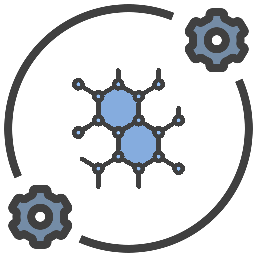

ROBERT v 0.0.1 2023/05/01 20:57:09 Citation: ROBERT v 0.0.1, Dalmau, D.; Alegre-Requena, J. V., 2023. https://github.com/jvalegre/robert Command line used in ROBERT: robert --aqme --csv_name solubility.csv --y solub --ignore ['smiles','code_name'] --c search_keywords --sample 2 --qdescp_keywords --qdescp_atom P
 AQME-ROBERT
o Starting the generation of AQME descriptors with the AQME module Time AQME: 27.22 seconds
 CURATE
CURATE
o Starting data curation with the CURATE module o Database AQME-ROBERT_solubility.csv loaded successfully, including: - 25 datapoints - 41 accepted descriptors - 2 ignored descriptors - 0 discarded descriptors o Analyzing categorical variables - No categorical variables were found. o Correlation filter activated with these thresholds: thres_x = 0.85, thres_y = 0.02 Excluded descriptors: - partial charges: R**2 = 1.0 with mulliken charges - cm5 charges: R**2 = 1.0 with partial charges - FUKUI+: R**2 = 1.0 with partial charges - FUKUI-: R**2 = 1.0 with partial charges - partial charges: R**2 = 1.0 with FUKUIrad - s proportion: R**2 = 1.0 with partial charges - partial charges: R**2 = 1.0 with p proportion - partial charges: R**2 = 1.0 with d proportion - Coordination numbers: R**2 = 1.0 with partial charges - partial charges: R**2 = 1.0 with Dispersion coefficient C6 - partial charges: R**2 = 1.0 with Polarizability alpha - FOD: R**2 = 1.0 with partial charges - partial charges: R**2 = 1.0 with FOD s proportion - FOD p proportion: R**2 = 1.0 with partial charges - partial charges: R**2 = 1.0 with FOD d proportion - DBSTEP_Vbur: R**2 = 1.0 with partial charges - FUKUIrad: R**2 = 1.0 with mulliken charges - p proportion: R**2 = 1.0 with mulliken charges - d proportion: R**2 = 1.0 with mulliken charges - Dispersion coefficient C6: R**2 = 1.0 with mulliken charges - Polarizability alpha: R**2 = 1.0 with mulliken charges - FOD s proportion: R**2 = 1.0 with mulliken charges - FOD d proportion: R**2 = 1.0 with mulliken charges - total energy: R**2 = 1.0 with electronic energy - total energy: R**2 = 0.85 with Total dispersion C6 - total energy: R**2 = 0.86 with Total polarizability alpha - HOMO-LUMO gap/eV: R**2 = 0.0 with the solub values - electronic energy: R**2 = 0.85 with Total dispersion C6 - electronic energy: R**2 = 0.86 with Total polarizability alpha - Total charge: error in R**2 with the solub values (are all the values the same?) - LUMO: R**2 = 0.0 with the solub values - Fermi-level/eV: R**2 = 0.0 with the solub values - Total dispersion C8: R**2 = 0.95 with Total dispersion C6 - Total dispersion C6: R**2 = 0.96 with Total polarizability alpha - NHOHCount: R**2 = 0.95 with NumHDonors - FractionCSP3: R**2 = 0.02 with the solub values - NumAromaticRings: R**2 = 0.02 with the solub values - NumHAcceptors: R**2 = 0.01 with the solub values - NumHeteroatoms: R**2 = 0.0 with the solub values o 14 descriptors remaining after applying correlation filters: - code_name - solub - smiles - mulliken charges - Dipole module/D - HOMO - Total polarizability alpha - Total FOD - NOCount - NumAliphaticRings - NumHDonors - NumRotatableBonds - TPSA - MolLogP o The curated database was stored in /mnt/netapp1/Store_CSIC/home/csic/qoy/jar/test/CURATE/AQME-ROB ERT_solubility_CURATE.csv. Time CURATE: 0.04 seconds

GENERATE
o Starting generation of ML models with the GENERATE module o Database /mnt/netapp1/Store_CSIC/home/csic/qoy/jar/test/CURATE/AQME-ROBERT_solubility_CURATE.csv loaded successfully, including: - 25 datapoints - 12 accepted descriptors - 2 ignored descriptors - 0 discarded descriptors o Starting heatmap scan with 4 ML models ['RF', 'GB', 'NN', 'VR'] and 4 training sizes [60, 70, 80, 90]. Heatmap generation: - 1/16 - 2/16 - 3/16 - 4/16 - 5/16 - 6/16 - 7/16 - 8/16 - 9/16 - 10/16 - 11/16 - 12/16 - 13/16 - 14/16 - 15/16 - 16/16 o Heatmap ML models no PFI filter succesfully created in /mnt/netapp1/Store_CSIC/home/csic/qoy/jar/ test/GENERATE/Raw_data o Heatmap ML models with PFI filter succesfully created in /mnt/netapp1/Store_CSIC/home/csic/qoy/ja r/test/GENERATE/Raw_data Time GENERATE: 66.31 seconds


 PREDICT
PREDICT
o Representation of predictions and analysis of ML models with the PREDICT module
o ML model NN_80.csv (with no PFI filter) and its corresponding Xy database were loaded successfull
y, including:
- Target value: solub
- Model: NN
- Descriptors: ['mulliken charges', 'Dipole module/D', 'HOMO', 'Total polarizability alpha', 'Tot
al FOD', 'NOCount', 'NumAliphaticRings', 'NumHDonors', 'NumRotatableBonds', 'TPSA', 'MolLogP']
- Training points: 20
- Validation points: 5
- Train set with predicted results: NN_80_train_No_PFI.csv
- Validation set with predicted results: NN_80_valid_No_PFI.csv
o Saving graphs and CSV databases in /mnt/netapp1/Store_CSIC/home/csic/qoy/jar/test/PREDICT:
- Graph in: /mnt/netapp1/Store_CSIC/home/csic/qoy/jar/test/PREDICT/Results_NN_80_No_PFI.png
o Results saved in /mnt/netapp1/Store_CSIC/home/csic/qoy/jar/test/PREDICT/Results_NN_80_No_PFI.d
at:
- Points Train:Validation = 20:5
- Proportion Train:Validation = 80:20
- Train : R2 = 0.96, MAE = 0.24, RMSE = 0.32
- Validation : R2 = 0.93, MAE = 0.27, RMSE = 0.35
o SHAP plot saved in /mnt/netapp1/Store_CSIC/home/csic/qoy/jar/test/PREDICT/SHAP_NN_80_No_PFI.pn
g
o SHAP values saved in /mnt/netapp1/Store_CSIC/home/csic/qoy/jar/test/PREDICT/SHAP_NN_80_No_PFI.
dat:
- TPSA = min: -0.6, max: 0.5
- NumHDonors = min: -0.13, max: 0.46
- MolLogP = min: -0.25, max: 0.38
- Total polarizability alpha = min: -0.44, max: 0.24
- NumRotatableBonds = min: -0.36, max: 0.22
- Total FOD = min: -0.082, max: 0.18
- Dipole module/D = min: -0.36, max: 0.13
- HOMO = min: -0.13, max: 0.067
- NOCount = min: -0.093, max: 0.046
- mulliken charges = min: 0.0, max: 0.0
- NumAliphaticRings = min: 0.0, max: 0.0
o PFI plot saved in /mnt/netapp1/Store_CSIC/home/csic/qoy/jar/test/PREDICT/PFI_NN_80_No_PFI.png
o PFI values saved in /mnt/netapp1/Store_CSIC/home/csic/qoy/jar/test/PREDICT/PFI_NN_80_No_PFI.da
t:
Original score (from model.score, R2) = 0.89
- TPSA = 0.34 +- 0.29
- Total polarizability alpha = 0.16 +- 0.12
- NumRotatableBonds = 0.13 +- 0.086
- Dipole module/D = 0.12 +- 0.076
- Total FOD = 0.088 +- 0.054
- HOMO = 0.037 +- 0.037
- NOCount = 0.021 +- 0.019
- NumHDonors = 0.018 +- 0.046
- mulliken charges = 0.0 +- 0.0
- NumAliphaticRings = 0.0 +- 0.0
o Outliers plot saved in /mnt/netapp1/Store_CSIC/home/csic/qoy/jar/test/PREDICT/Outliers_NN_80_N
o_PFI.png
o Outlier values saved in /mnt/netapp1/Store_CSIC/home/csic/qoy/jar/test/PREDICT/Outliers_NN_80_
No_PFI.dat:
x No variable names found or names option not specified! Outliers will be printed with no nam
es
Train: 1 outliers out of 20 datapoints (5.0%)
Validation: 1 outliers out of 5 datapoints (20.0%)
o ML model VR_90_PFI.csv (with PFI filter) and its corresponding Xy database were loaded successful
ly, including:
- Target value: solub
- Model: VR
- Descriptors: ['Total polarizability alpha', 'Total FOD', 'NOCount', 'NumRotatableBonds', 'TPSA'
, 'MolLogP']
- Training points: 22
- Validation points: 3
- Train set with predicted results: VR_90_train_PFI.csv
- Validation set with predicted results: VR_90_valid_PFI.csv
o Saving graphs and CSV databases in /mnt/netapp1/Store_CSIC/home/csic/qoy/jar/test/PREDICT:
- Graph in: /mnt/netapp1/Store_CSIC/home/csic/qoy/jar/test/PREDICT/Results_VR_90_PFI.png
o Results saved in /mnt/netapp1/Store_CSIC/home/csic/qoy/jar/test/PREDICT/Results_VR_90_PFI.dat:
- Points Train:Validation = 22:3
- Proportion Train:Validation = 88:12
- Train : R2 = 0.99, MAE = 0.18, RMSE = 0.22
- Validation : R2 = 0.93, MAE = 0.36, RMSE = 0.36
o SHAP plot saved in /mnt/netapp1/Store_CSIC/home/csic/qoy/jar/test/PREDICT/SHAP_VR_90_PFI.png
o SHAP values saved in /mnt/netapp1/Store_CSIC/home/csic/qoy/jar/test/PREDICT/SHAP_VR_90_PFI.dat
:
- MolLogP = min: -0.45, max: 0.23
- NOCount = min: -0.25, max: 0.13
- Total polarizability alpha = min: -0.12, max: 0.13
- TPSA = min: -0.2, max: 0.11
- NumRotatableBonds = min: -0.12, max: 0.089
- Total FOD = min: -0.028, max: 0.02
o PFI plot saved in /mnt/netapp1/Store_CSIC/home/csic/qoy/jar/test/PREDICT/PFI_VR_90_PFI.png
o PFI values saved in /mnt/netapp1/Store_CSIC/home/csic/qoy/jar/test/PREDICT/PFI_VR_90_PFI.dat:
Original score (from model.score, R2) = 0.73
- MolLogP = 0.66 +- 0.42
- NOCount = 0.32 +- 0.25
- TPSA = 0.24 +- 0.2
- NumRotatableBonds = 0.049 +- 0.12
- Total polarizability alpha = 0.0052 +- 0.093
- Total FOD = -0.036 +- 0.022
o Outliers plot saved in /mnt/netapp1/Store_CSIC/home/csic/qoy/jar/test/PREDICT/Outliers_VR_90_P
FI.png
o Outlier values saved in /mnt/netapp1/Store_CSIC/home/csic/qoy/jar/test/PREDICT/Outliers_VR_90_
PFI.dat:
x No variable names found or names option not specified! Outliers will be printed with no nam
es
Train: 1 outliers out of 22 datapoints (4.5%)
Validation: 1 outliers out of 3 datapoints (33.3%)
Time PREDICT: 8.26 seconds


VERIFY
o Starting tests to verify the prediction ability of the ML models with the VERIFY module
o ML model NN_80.csv (with no PFI filter) and its corresponding Xy database were loaded successfull
y, including:
- Target value: solub
- Model: NN
- Descriptors: ['mulliken charges', 'Dipole module/D', 'HOMO', 'Total polarizability alpha', 'Tot
al FOD', 'NOCount', 'NumAliphaticRings', 'NumHDonors', 'NumRotatableBonds', 'TPSA', 'MolLogP']
- Training points: 20
- Validation points: 5
o VERIFY donut plots saved in /mnt/netapp1/Store_CSIC/home/csic/qoy/jar/test/VERIFY/VERIFY_tests
_NN_80_No_PFI.png
o VERIFY test values saved in /mnt/netapp1/Store_CSIC/home/csic/qoy/jar/test/VERIFY/VERIFY_tests
_NN_80_No_PFI.dat:
Results of the VERIFY tests:
Original score (train set for CV): RMSE = 0.32, with a +- threshold (thres_test option) of 20.
0%:
- 5-fold CV: NOT DETERMINED, data splitting was done with KN. CV result: RMSE = 0.76
Original score (validation set): RMSE = 0.35, with a +- threshold (thres_test option) of 20.0%
:
o X_shuffle: PASSED, RMSE = 0.56 is higher than the threshold (0.42)
o y_shuffle: PASSED, RMSE = 1.4 is higher than the threshold (0.42)
o onehot: PASSED, RMSE = 1.1 is higher than the threshold (0.42)
o ML model VR_90_PFI.csv (with PFI filter) and its corresponding Xy database were loaded successful
ly, including:
- Target value: solub
- Model: VR
- Descriptors: ['Total polarizability alpha', 'Total FOD', 'NOCount', 'NumRotatableBonds', 'TPSA'
, 'MolLogP']
- Training points: 22
- Validation points: 3
o VERIFY donut plots saved in /mnt/netapp1/Store_CSIC/home/csic/qoy/jar/test/VERIFY/VERIFY_tests
_VR_90_PFI.png
o VERIFY test values saved in /mnt/netapp1/Store_CSIC/home/csic/qoy/jar/test/VERIFY/VERIFY_tests
_VR_90_PFI.dat:
Results of the VERIFY tests:
Original score (train set for CV): RMSE = 0.22, with a +- threshold (thres_test option) of 20.
0%:
- 5-fold CV: NOT DETERMINED, data splitting was done with KN. CV result: RMSE = 0.63
Original score (validation set): RMSE = 0.36, with a +- threshold (thres_test option) of 20.0%
:
x X_shuffle: FAILED, RMSE = 0.34 is lower than the threshold (0.43)
o y_shuffle: PASSED, RMSE = 1.5 is higher than the threshold (0.43)
o onehot: PASSED, RMSE = 1.5 is higher than the threshold (0.43)
Time VERIFY: 1.94 seconds